Versionamento de edições
| Data | autor | Descrição | Versão |
|---|---|---|---|
| 27/05/2019 | William Elias Alves | Inserção de definição e objetivo | 0.1 |
| 27/05/2019 | William Elias Alves | Adição da definição, objetivo e resultados | 0.2 |
| 27/05/2019 | William Elias Alves | Adição dos nfrs de controle de conteúdo | 0.3 |
| 28/05/2019 | Matheus Blanco | Adição dos nfrs de manutenibilidade | 0.4 |
| 28/05/2019 | Pedro Rodrigues | Adição dos nfrs de usabilidade | 0.5 |
| 29/05/2019 | Pedro Rodrigues | Adição modelo relacional, nfr de usabilidade | 0.6 |
| 29/05/2019 | Aline Laureano | Adição dos nfrs de performance | 0.7 |
| 29/05/2019 | Luis Claudio T. Lima | Adição dos nfrs de confiabilidade | 0.8 |
| 29/05/2019 | Gabriel Filipe | Adição dos nfrs de iteroperabilidade | 0.9 |
Definição
O framework NFR é um meio de modelagem de requisitos que abrange especificadamente os requisitos não funcionais de um software. Por meio da utilização de conceitos como softgoals, operations e afins. No presente documento serão expostos o modelo de relação por meio do NFR e o modelo de análise.
Objetivo
A modelagem aqui feita é de suma importância para a compreensão do funcionamento dos requisitos não funcionais da aplicação MEDIUM e sua influência em meio ao concebimento do software e possíveis justificativas para algumas adoções de escolhas.
Resultados
Foram modelados NFRs de análise e relação com os seguintes enfoques:
- Controle de conteúdo;
- Segurança;
- Performance;
- Escalabilidade;
- Usabilidade;
- Manutenibilidade;
- Confiabilidade;
- Interoperabilidade.
Tabela de descrição dos NRFs
Para conseguirmos organizar as categorias de requisitos não funcionais factíveis e relacionáveis ao software MEDIUM fora criada uma tabela relacionando categorias de requisitos, metas e observações referentes as metas.
(Espaço para a tabela)
A seguir podemos visualizar os nfrs construídos de acordo com as categorias.
Requisitos não funcionais :
Manutenibilidade
Responsável: Matheus Salles Blanco
Modelo Analítico(V1.0)
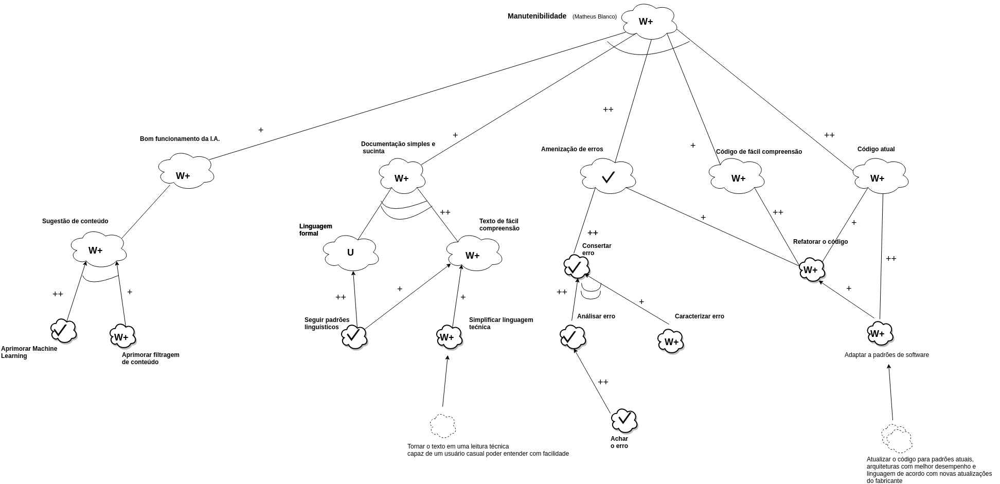
Modelo Analítico(V2.0)
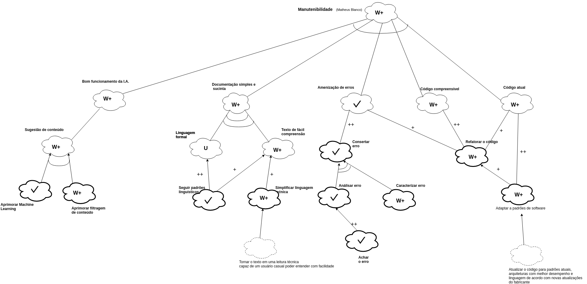
Modelo Analítico(V3.0)
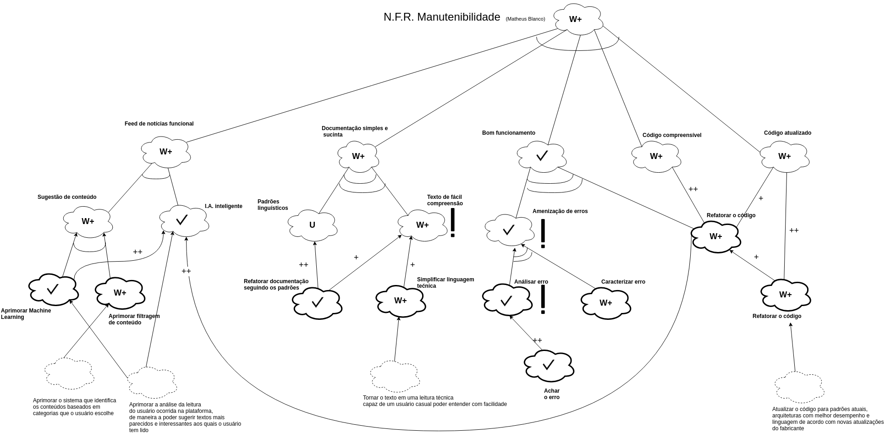
Modelo Relacional(V1.0)
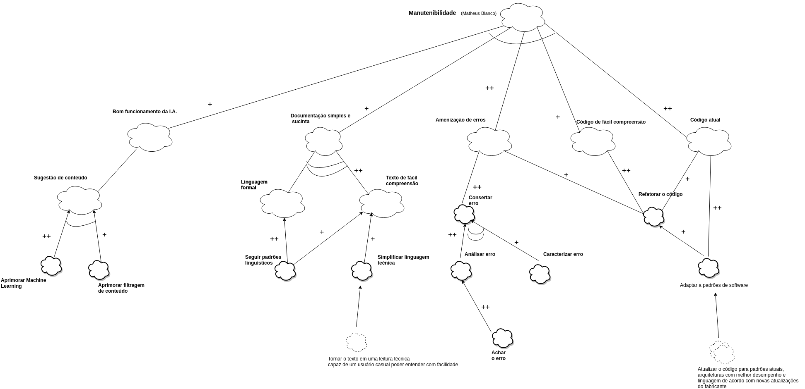
Modelo Relacional(V2.0)
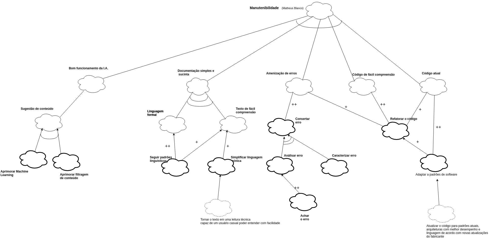
Modelo Relacional(V3.0)
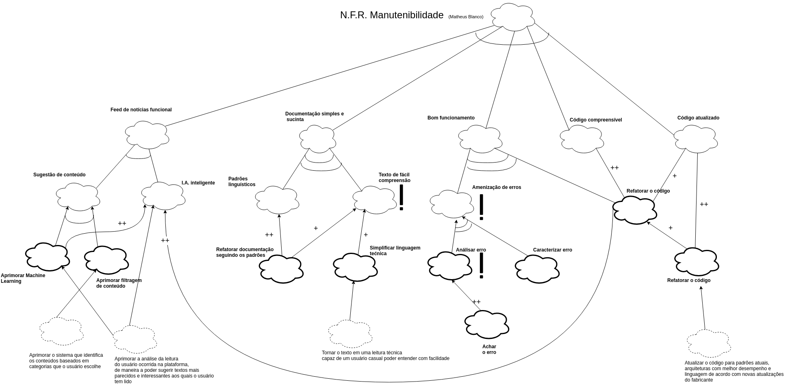
Controle de Qualidade
Responsável: William Elias Alves
Modelo Relacional(V1.0)
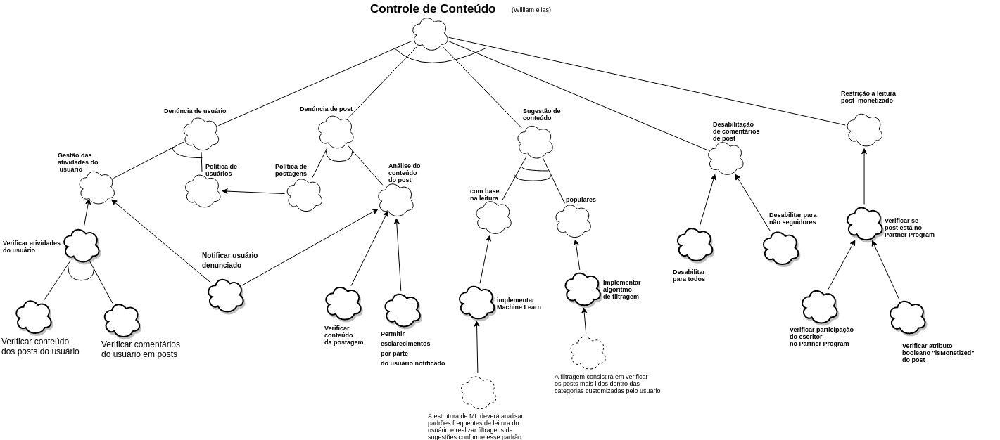
Modelo Relacional(V2.0)
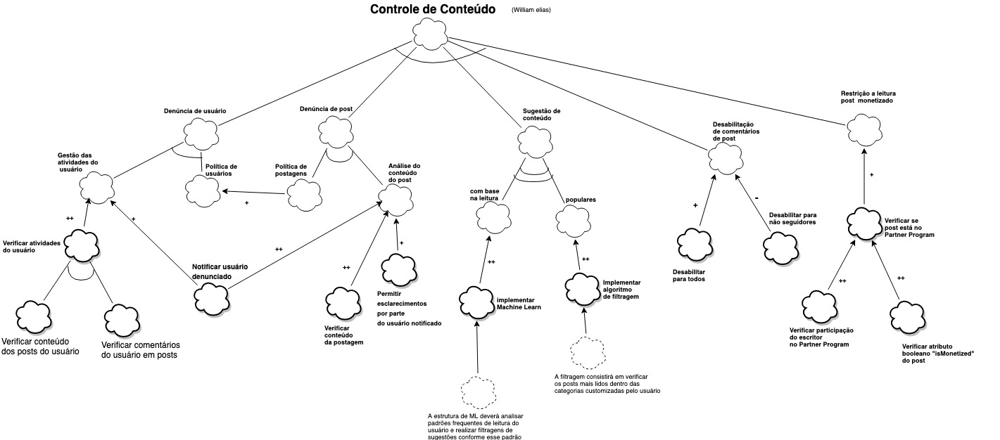
Modelo Analítico(V1.0)
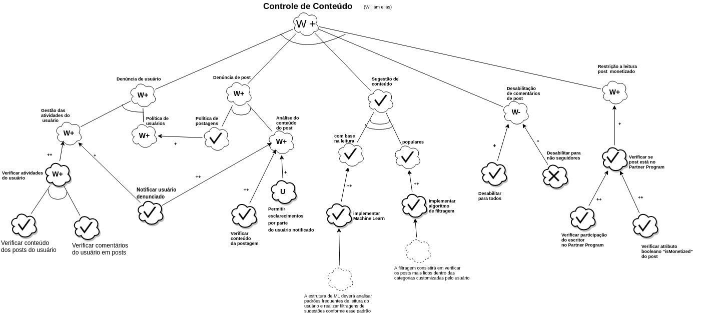
Usabilidade
Responsável: Pedro Rodrigues Pereira
Modelo Analítico(V1.0)
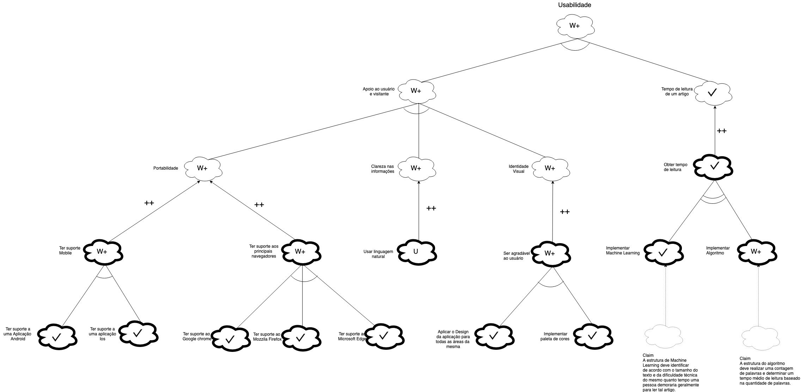
Modelo Relacional(V1.0)
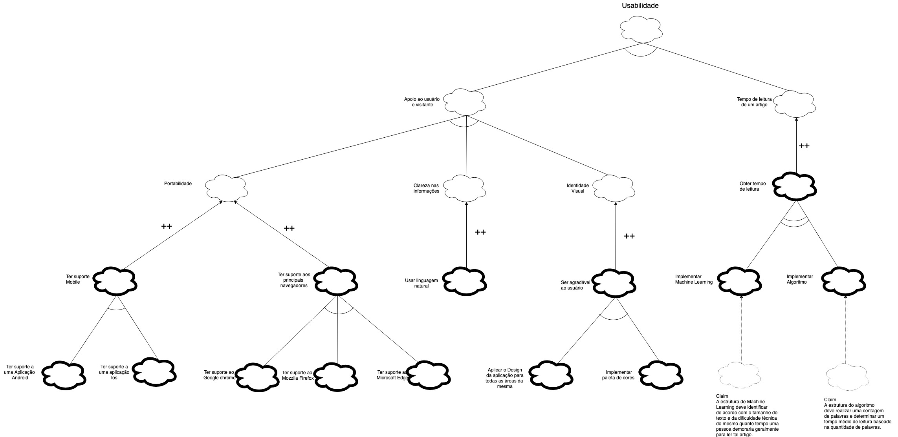
Performance
Responsável: Aline Laureano de A. Vilela
Modelo Relacional(V1.0)
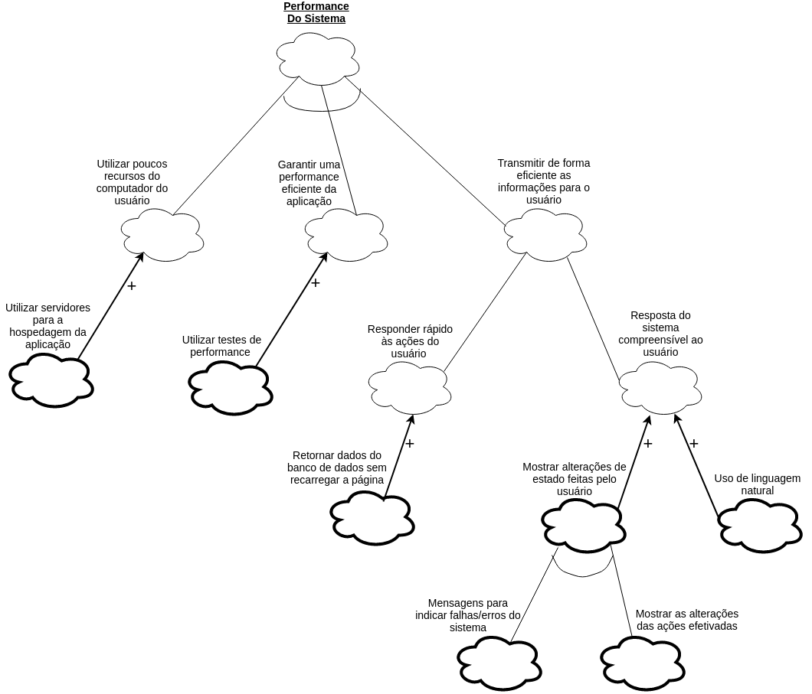
Modelo Relacional(V2.0)
Modelo Analítico(V1.0)
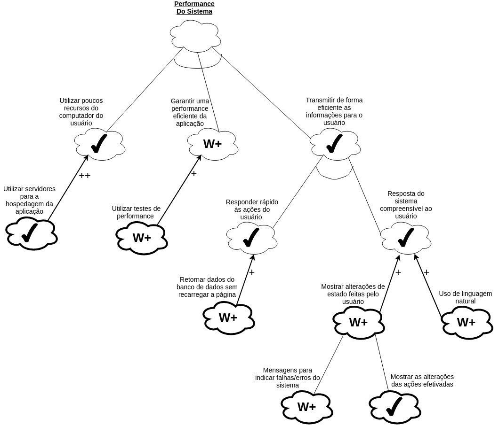
Confiabilidade
Responsável: Luis Claudio Telles Lima
Modelo Relacional(V1.0)
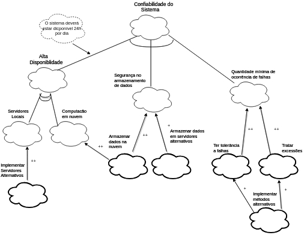
Modelo Analítico(V1.0)
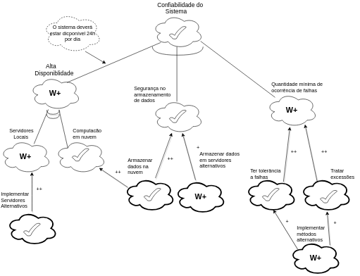
Iteroperabilidade
Responsável: Gabriel Filipe Manso Araujo
Modelo Analítico(V1.0)
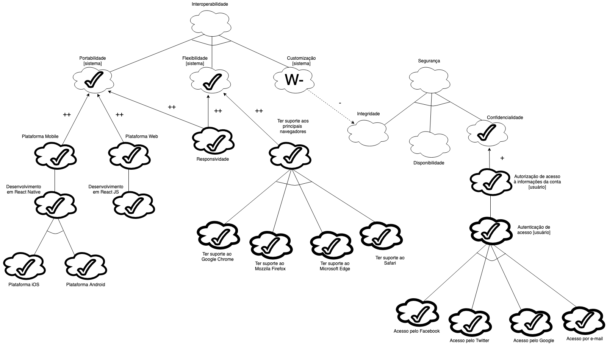
Modelo Analítico(V2.0)
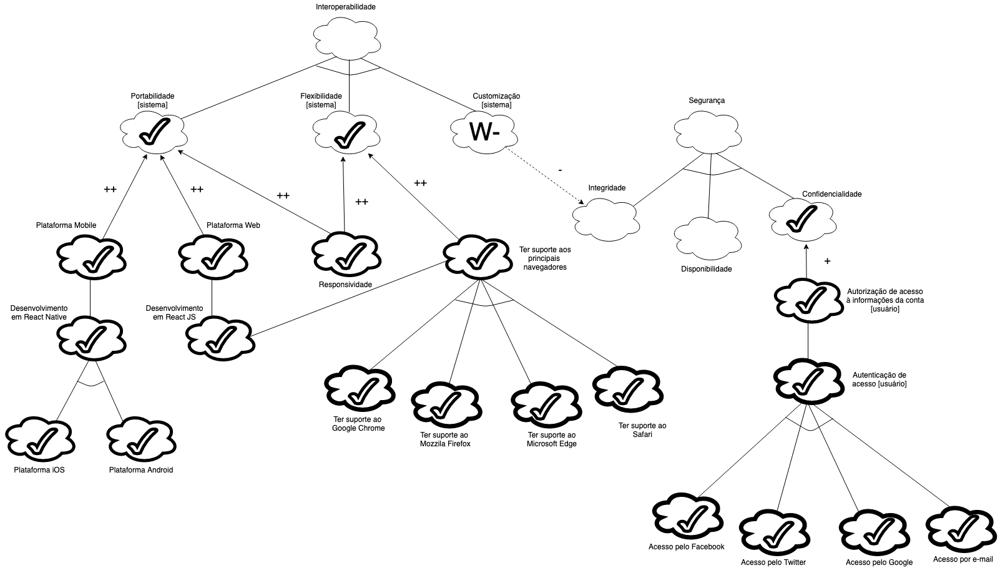
Modelo Relacional(V1.0)
Segurança
Responsável: Guilherme Marques
Modelo Analítico(V1.0)
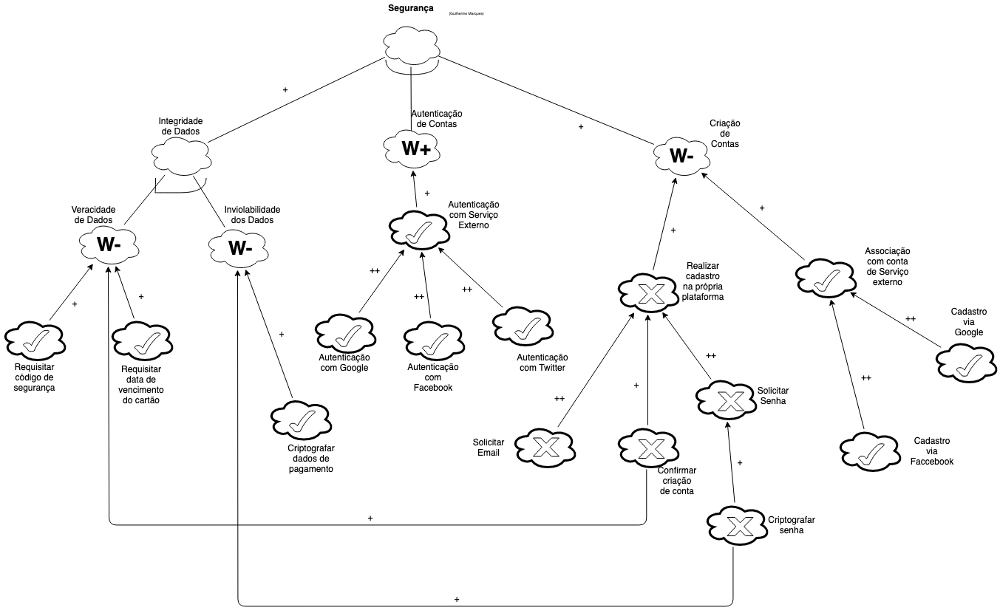
Modelo Relacional(V2.0)